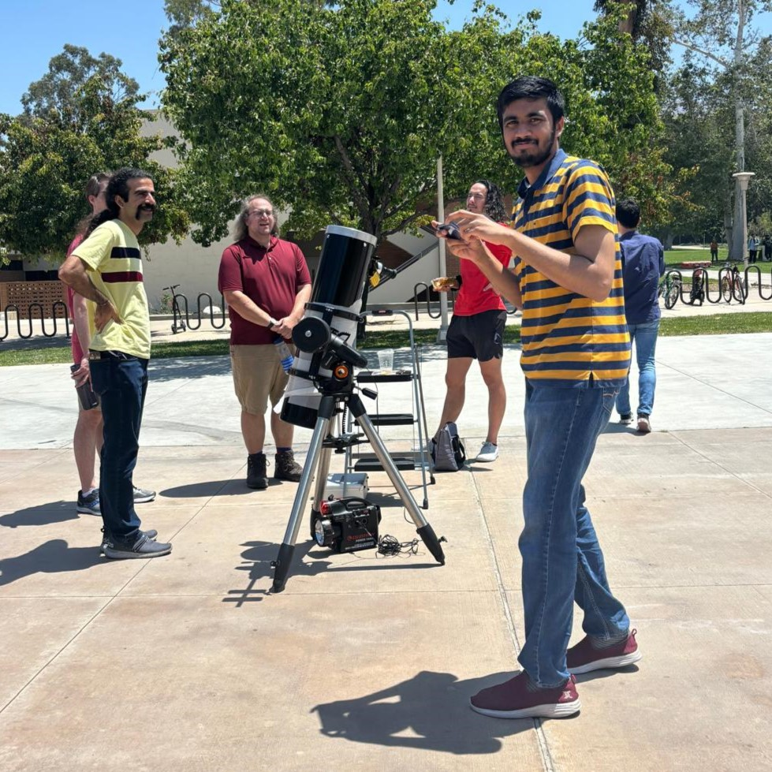
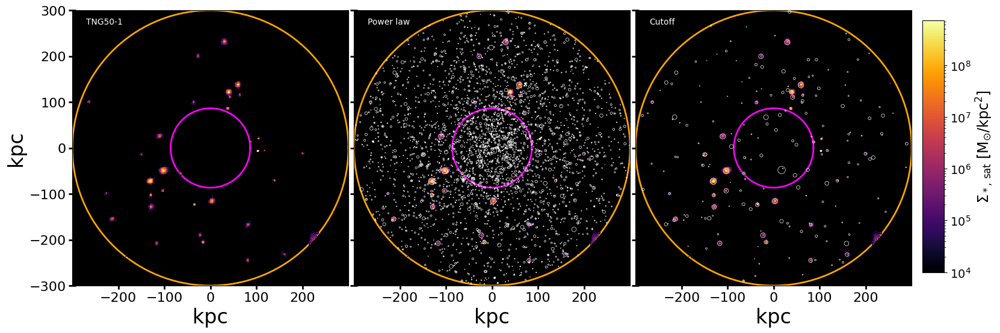

Contact me via email: psadh003 (AT) ucr.edu
Graduate student in Dept. of Physics and Astronomy at University of California, Riverside.

I am currently working with Prof. Laura Sales to understand the nature of dark matter and galaxy formation using dwarf galaxies as probes. We are currently making predictions for what upcoming surveys like Vera Rubin and Roman telescopes should be seeing when they start probing the "faint universe". Towards this end, we leverage the combined power of cosmological simulations and semi-analytic models. Our first results indicate that there must be 10,000 to 100,000 dwarf galaxies in a Virgo like cluster. While cosmological simulations tend to not resolve the low mass galaxies because of numerical effects, semi-analytic models come to rescue!
